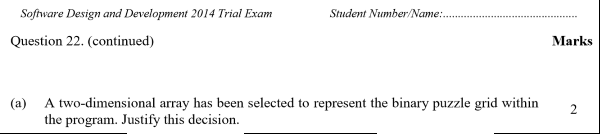
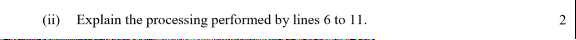

The repository for this site is at: https://github.com/bwattle/BinaryPuzzle
Links to versions and descriptions are below:
v1.01 - A blank shell ready for some unique, innovative code
v1.02 - changed red tripple lines with single line - 2 lines of css
v1.03 - grunt code to load the 6x6 table - page is 150 lines
v1.04 - 36 lines of grunt code replaced by 6 loops (only 3 done so far)
v1.05 - Gameboard re-labelled and the 6 loops re-labelled accordingly. This is preparation for nesting the column loops inside row loops. These 2 nested loops (about 4 lines of code) will replace the original 36 lines of repetative grunt code.
v1.06 - 2 nested loops finally replace the 36 lines of grunt code
v1.07 - Push temporary row arrays to a 2D array called "Grid". Added text boxes to view Grid in 1D and 2D form, as well as calling 1 test element.
v1.08 - Add a dropdown to select a game and buttons to test the structure chart modules.
v1.09 - Create a function to "DisplayGrid" after values have been changed. This will be called from every button. (ERROR: "Grid" array does NOT wipe when loading a new game - see 1D text box to see it getting longer and longer.)
v1.10 - ERROR from v1.09 repaired by setting Grid = []; in the "loadGrid" function. This shows the advantage of having test data for quick reference. Also shifted the writing to text boxes from "LoadGrid" to "DisplayGrid".
v1.11 - "RowPairs" module has been converted from the pseudocode below into JavaScript and functions on the button press.
A zip of the Visual Studio solution folder for version 1.05 can be downloaded here.
The question we are solving is below in images:






End of Question